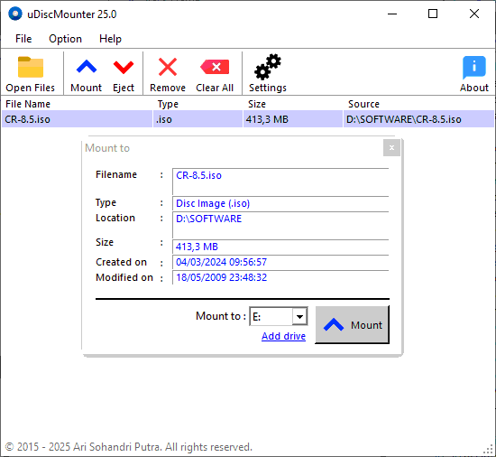

uDiscMounter
 uDiscMounter is a tool that can manage virtual drives and mount disk image files with extensive format support on Windows.Supports nearly all known CD/DVD image file formats (.ISO, .BIN, .IMG, .CIF, .NRG, .MDS, .CCD, .BWI, .ISZ, .DMG, .DAA, .UIF, .HFS and so on).
Key Features
- Manage Virtual Drives - Set up uDiscMounter virtual drives on Windows starting from installing virtual drive drivers and uninstalling the drivers. and set the number of virtual drives according to user needs.
- Mount and Eject Disk image files - Mount a disk image file to a virtual drive to virtualize the disk image file, and to eject the disk image file on the virtual drive.
- Associate files with uDiscMounter - uDiscMounter can be associated with almost all disk image formats
Frequently Asked Questions
Is uDiscMounter free?
→ Yes, uDiscMounter offers a free version with basic functionality. For advanced features and priority support, you can purchase the unlimited version.
Can I edit the files inside the disk image?
→ uDiscMounter is primarily for reading disc image contents. To modify files, you'll need to extract them using appropriate software.
What formats are supported?
→ uDiscMounter supports ISO, BIN, IMG, NRG, MDF, and other popular disc image formats. See the full list in the program's documentation.
|